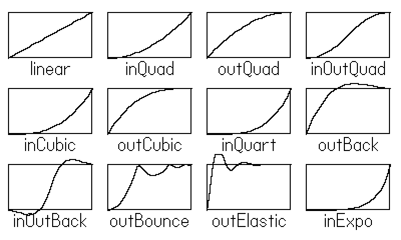
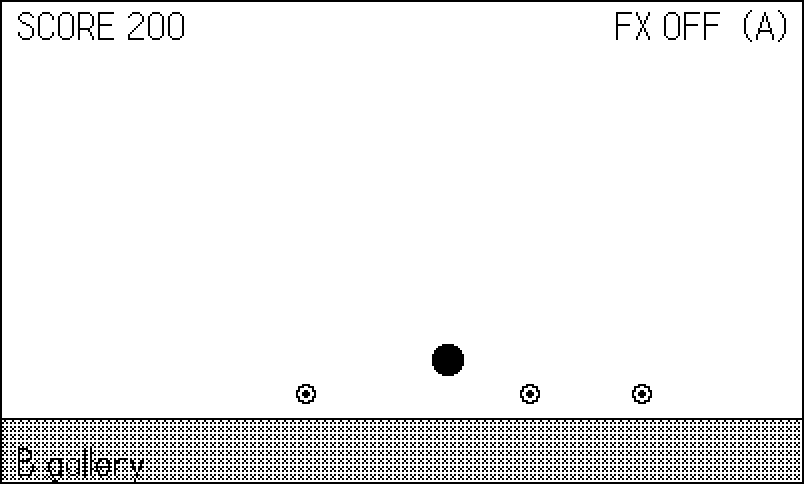
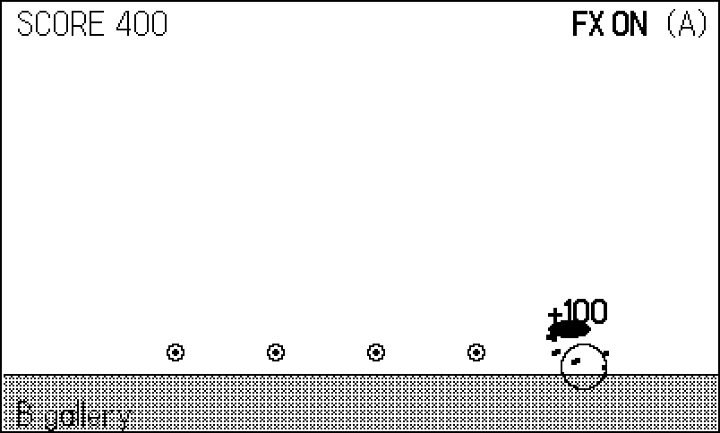

15 Game Feel: Timers, Animators, and Effects
Take a ball, make it bounce, and give it coins to collect. Correct, complete — and dead. Now make the screen jolt when it lands, freeze time for three frames on a pickup, invert the display for two, throw a fistful of particles, squash the ball flat on impact, and float an eased +100 up from the coin. Same game. It feels alive. That gap — between correct and alive — is what this chapter is about, and the industry’s name for closing it is juice.
The example is exactly that scene, with every effect behind one switch. Press A and the whole apparatus turns on or off, so you can A/B the difference in a single session (Figure 15.2 and Figure 15.3 are the same scene, twelve frames of game time apart). Along the way we cover the SDK’s three timing tools — playdate.timer, playdate.graphics.animator, and the easing function catalog they share — and, honestly, why the sixty shipped games mostly rolled their own instead. Both answers belong in your toolbox; this chapter is where you learn which to reach for.
15.1 playdate.timer: the SDK’s clock
playdate.timer (import CoreLibs/timer) is the SDK’s general-purpose delayed-and-animated-value machine. It comes in three shapes.
Callback timers run a function after a duration: playdate.timer.new(2000, fn) calls fn after two seconds. Extra arguments are passed through to the callback. Set repeats = true on the returned timer and it fires every two seconds until you :remove() it.
performAfterDelay is the one-shot convenience: playdate.timer.performAfterDelay(delay, fn, ...) — fire and forget. (A cousin, playdate.timer.keyRepeatTimer(callback), fires immediately, again after 300ms, then every 100ms — the standard key-repeat cadence for scrolling menus; Chapter 11’s gridview uses the same rhythm.)
Value timers animate a number instead of firing a callback: playdate.timer.new(duration, startValue, endValue, [easing]) gives you a timer whose .value property glides between the endpoints, optionally shaped by an easing function. The example uses one for its collect rings:
-- A collect ring rides a VALUE timer: playdate.timer.new with
-- start/end values animates timer.value from 4 to 22 over
-- 350ms. Requires playdate.timer.updateTimers() every frame.
function Fx.ring(x, y)
if not Fx.on then return end
rings[#rings + 1] = {
x = x, y = y,
t = playdate.timer.new(350, 4, 22,
playdate.easingFunctions.outQuad),
age = 0,
}
endTimers also expose paused, :pause()/:start(), :reset(), timeLeft, repeats, reverses, and discardOnCompletion (default true, which is why finished timers vanish without cleanup). It is a complete little system — with one absolute requirement.
updateTimers(), no timers
Timers do nothing unless playdate.timer.updateTimers() runs in your playdate.update() every frame. Not “run slowly” — nothing. The callback never fires, .value never moves, and no error is raised anywhere. The SDK documentation marks this Important and repeats it as a Caution on every API that uses timers internally (playdate.ui.gridview among them, from Chapter 11). If a timer “mysteriously” does nothing, this is the cause, every time. The example’s update loop opens with it:
function playdate.update()
-- both SDK helpers need their update calls every frame;
-- forget these and timers/blinkers silently never fire
playdate.timer.updateTimers()
gfx.animation.blinker.updateAll()
Util.tick()
local inp = gather(frame)
if inp.toggleFx then Fx.on = not Fx.on end
if inp.gallery then
mode = (mode == "scene") and "gallery" or "scene"
end
if mode == "scene" then
if not Fx.frozen() then -- hitstop skips the sim
Scene.update()
Fx.update(DT)
end
Scene.draw(blinker.on)
else
Gallery.draw()
end
end15.2 playdate.graphics.animator: values with a shape
Where a timer can animate a value, an animator (import CoreLibs/animator) exists only for that. gfx.animator.new(duration, startValue, endValue, [easing, [startTimeOffset]]) returns an object whose :currentValue() you read each frame, plus :ended(), :progress(), and :reset(). Animators can also traverse geometry — pass a playdate.geometry lineSegment, arc, or polygon and :currentValue() returns points along it, which turns “swoop this menu card in along a curve” from trigonometry into a constructor call — and chain multi-part moves via parallel arrays of durations and parts. The startTimeOffset argument delays the start, so a hand of five cards dealt with offsets 0, 80, 160… cascades from one line of setup. A sprite can even ride one via setAnimator (Chapter 6).
The example’s score popups are the canonical small use:
-- A score popup rides a gfx.animator from 0 to -34 pixels with
-- outCubic easing: it leaps up fast and settles gently.
function Fx.popup(x, y, text)
if not Fx.on then return end
popups[#popups + 1] = {
x = x, y = y, text = text,
anim = gfx.animator.new(600, 0, -34,
playdate.easingFunctions.outCubic),
}
endEach popup owns an animator running 0 to −34 over 600ms with outCubic easing: it leaps up fast and settles gently, which reads as pop rather than drift. The draw pass just adds anim:currentValue() to the y position and drops the popup once anim:ended() reports true.
Animators share the timer’s wall-clock caveat (the SDK docs caution that animators do not even pause during playdate.wait()), but for decorative motion that is usually fine — if a popup rises a shade faster on a slow frame, nobody’s save file cares.
15.3 The easing catalog
Both timers and animators accept an easing function, and the SDK ships the full Robert Penner set in playdate.easingFunctions (import CoreLibs/easing): linear, then in/out/inOut/outIn variants of Quad, Cubic, Quart, Quint, Sine, Expo, Circ, plus the character pieces — Back (overshoots and returns), Elastic (springs), Bounce (bounces). Every one takes the same four arguments (t, b, c, d) — elapsed time, beginning value, total change, duration — and returns the current value, which means you can also call them directly, no timer required, whenever you have your own 0-to-1 progress.
Names beat formulas here, and a picture beats both. The example’s second screen plots twelve of them (Figure 15.1):
function Gallery.draw()
gfx.clear(gfx.kColorWhite)
for i, name in ipairs(names) do
local fn = playdate.easingFunctions[name]
local col = (i - 1) % 4
local row = (i - 1) // 4
local x0 = 8 + col * 99
local y0 = 12 + row * 76
local w, h = 84, 46
gfx.drawRect(x0, y0, w, h)
local px, py
for s = 0, 40 do
local t = s / 40
-- every easing takes (t, b, c, d): time, begin,
-- change, duration. b=0, c=1, d=1 plots 0..1.
local v = fn(t, 0, 1, 1)
local x = x0 + t * w
local y = y0 + h - v * h
-- back/elastic overshoot the box; let them, a bit
y = math.max(y0 - 10, math.min(y0 + h + 10, y))
if px then gfx.drawLine(px, py, x, y) end
px, py = x, y
end
gfx.drawTextAligned(name, x0 + w // 2,
y0 + h + 2, kTextAlignment.center)
end
end
outBack and inOutBack escaping their boxes — that overshoot is the point.
A working shorthand for choosing: out* for things arriving (menus sliding in, popups appearing — fast start, gentle landing), in* for things leaving (gentle start, accelerating exit), inOut* for things traveling between two resting states. outBack makes UI feel enthusiastic; outElastic makes it feel springy; outBounce is almost always a joke, and occasionally the right one. linear is for progress bars and little else — motion with constant velocity reads as mechanical.
15.4 blinker: the last SDK piece
playdate.graphics.animation.blinker (import CoreLibs/animation) is a boolean metronome: blinker.new([onDuration, offDuration, loop, cycles, default]), then read its .on property to decide whether to draw a thing. The example uses one for its FX ON label:
-- the FX ON label blinks via the SDK's blinker helper
local blinker = gfx.animation.blinker.new(300, 200, true)
blinker:startLoop()Like timers, blinkers have an update requirement — gfx.animation.blinker.updateAll() every frame — and the same silent-nothing failure mode when you forget. For flashing PRESS A prompts it beats a hand-rolled frame % 20 < 10 mainly when the on and off durations differ; below that threshold, the modulo is honestly fine.
15.5 Hand-rolled effects: the juice itself
Now the effects the SDK does not provide — the ones that carry the feel. All four follow one design rule from the shipped games: every effect is a function call at the moment of impact, and the caller neither knows nor cares how it renders. Fx.shake(6, 3) at the bounce; done. And every one of them checks a master switch, which is what makes the A/B demo — and per-effect accessibility settings — possible. (The system exposes one such setting itself: playdate.getReduceFlashing() reads the player’s system-level “reduce flashing” preference, and your flash and shake effects should respect it.)
Screen shake is offset jitter. While the shake counter runs, the whole scene draws at a small random offset via gfx.setDrawOffset; the offset is re-rolled every frame, and reset to zero after drawing:
-- Screen shake is offset jitter: while shakeT > 0, the whole
-- scene draws at a small random offset. No SDK feature needed.
function Fx.shake(frames, mag)
if not Fx.on then return end
shakeT, shakeMag = frames, mag
end
function Fx.offset()
if shakeT <= 0 then return 0, 0 end
return math.random(-shakeMag, shakeMag),
math.random(-shakeMag, shakeMag)
endMagnitude 2–3 for hits, 5+ for explosions, and always brief — 6 frames is a fifth of a second. A shake that lingers reads as broken, not powerful.
Hit-flash inverts the whole screen for a frame or two. On a 1-bit display this is the single highest-contrast event available — the entire panel slams — and the XOR fill makes it a two-liner over the finished scene:
-- Hit-flash: invert the whole screen for a few frames by
-- XOR-filling over the finished scene.
function Fx.flash(frames)
if not Fx.on then return end
flashT = frames
end
function Fx.drawFlash()
if flashT > 0 then
gfx.setColor(gfx.kColorXOR)
gfx.fillRect(0, 0, 400, 240)
gfx.setColor(gfx.kColorBlack)
end
endFreeze frames (hitstop) are the boldest trick: on impact, the world simply does not update for 2–4 frames. The scene still draws — nothing flickers — but time itself hiccups, and the impact gains weight out of all proportion to the cost:
-- Freeze frames (hitstop): the world simply does not update
-- for a few frames. The scene still draws, so nothing flickers
-- -- time itself hiccups on impact.
function Fx.freeze(frames)
if not Fx.on then return end
freezeT = frames
end
function Fx.frozen()
if freezeT > 0 then
freezeT = freezeT - 1
return true
end
return false
endThe wiring in the update loop is one guard: if not Fx.frozen() then Scene.update() end — sim skipped, draw untouched. Anything that must keep moving during hitstop (a pause menu, say) belongs outside that guard. The fighting game Fightin’ Chitin leans on the same idea at larger scale, freezing the whole sim between rounds (chitin/source/main.lua:420) so KO’d bodies hang a beat before the verdict.
Particles are a shared pool of short-lived dots with velocity and gravity — the same architecture every phosphor vector game ships:
-- phosphor/vec/fx.lua:20
function Fx.burst(x, y, n, speed)
speed = speed or 70
for _ = 1, n do
if #particles >= MAX_POOL then return end
local a = math.random() * math.pi * 2
local s = speed * (0.4 + math.random() * 1.0)
particles[#particles + 1] = {
x = x, y = y,
vx = math.cos(a) * s, vy = math.sin(a) * s,
life = 0.25 + math.random() * 0.4,
}
end
endOne pool per game, burst to fill it, one update pass integrating positions and expiring lives, one draw pass of pixels. The key word is shared: nothing owns its particles, so a burst can outlive the coin (or enemy, or asteroid) that spawned it, and there is exactly one place to cap the count — which phosphor does, with the soft cap MAX_POOL (400) guarding the insert. A pathological cascade of bursts then degrades to “fewer sparks” instead of an unbounded frame cost (Chapter 21). The example’s version adds gravity and an upward bias so bursts fountain:
function Fx.burst(x, y, n)
if not Fx.on then return end
for _ = 1, n do
local a = math.random() * math.pi * 2
local s = 60 + math.random() * 90
parts[#parts + 1] = {
x = x, y = y,
vx = math.cos(a) * s,
vy = math.sin(a) * s - 60,
life = 0.3 + math.random() * 0.3,
}
end
endSquash and stretch is animation’s oldest principle applied at runtime: scale the ball wide-and-flat for a few frames on landing, narrow-and-tall while moving fast, and its constant area starts to imply weight and springiness:
local function drawBall(b)
local w, h = b.r * 2, b.r * 2
if Fx.on and squashT > 0 then
w, h = w * 1.5, h * 0.6 -- squash on landing
elseif Fx.on and math.abs(b.vy) > 180 then
w, h = w * 0.7, h * 1.35 -- stretch at speed
end
gfx.fillEllipseInRect(b.x - w / 2,
b.y + b.r - h, w, h)
end15.6 The scene: wiring impact to effects
Here is the whole collision-to-juice pipeline in one place — the bounce handler calls the effects and the coin respawn, each one a single line:
local function collectNear(x)
for _, c in ipairs(coins) do
if c.alive and math.abs(c.x - x) < 45 then
c.alive = false
score = score + 100
Harness.count("coins")
Fx.burst(c.x, c.y, 14)
Fx.popup(c.x, c.y - 14, "*+100*")
Util.after(45, function() c.alive = true end)
return true
end
end
return false
end
function Scene.update()
local b = ball
b.x = b.x + b.vx * DT
if b.x < 16 or b.x > 384 then b.vx = -b.vx end
b.vy = b.vy + G * DT
b.y = b.y + b.vy * DT
if b.y >= FLOOR - b.r then
b.y = FLOOR - b.r
b.vy = BOUNCE
squashT = 5
Harness.count("bounces")
Fx.shake(6, 3)
Fx.ring(b.x, FLOOR - 4)
if collectNear(b.x) then
Fx.flash(2)
Fx.freeze(3)
end
end
if squashT > 0 then squashT = squashT - 1 end
end

+100 popup is easing upward.
Compare Figure 15.2 and Figure 15.3: identical simulation, identical rules, and the juiced frame is unmistakably a game. The figure script flips the master switch on frame 140, between two bounces, precisely so these two shots bracket the change.
Order matters when effects stack, and the example’s frame is a worked answer. Update side: the freeze check runs first (frozen means nothing else simulates), then the sim, then Fx.update. Draw side: the shake offset is applied before anything draws (the whole world jolts together), particles and popups draw over the scene but under the HUD, and the XOR flash goes down absolutely last so it inverts the finished frame, HUD included. Get the flash and the offset in the wrong order and you invert a half-drawn frame or shake only half the world — both instantly visible, neither ever reported by an error.
Durations are the other half of stacking. The example’s collect fires a 3-frame freeze, a 2-frame flash, a 6-frame shake, ~12-frame particles, and a 600ms popup — impact, punctuation, tremor, debris, information, each on its own clock, ordered from shortest to longest. That cascade shape (the sharpest effects are the briefest) is a reliable default for any impact you design.
15.6.1 Feel on one bit
Two of this kit’s members are stronger on the Playdate than anywhere else, and one is weaker. Stronger: the hit-flash, because inverting a 1-bit screen is a total event — there is no muted, tasteful version, and the panel’s whole character reverses for a frame. Stronger too is hitstop, because with no color and no motion blur, the Playdate reads stillness beautifully. Weaker: subtle alpha-style effects — a soft white glow or a translucent shockwave needs dither (Chapter 4), and fine dither at 30fps can shimmer. The idiomatic substitutes are structural: swap a sprite’s fill from dithered gray to solid black for a “charged” state, pulse an outline’s thickness, or draw a one-frame expanding ring like the example’s collect. And remember the other half of feel is audible — the thump this chapter builds visually is completed by the SFX patterns of Chapter 12; the shipped games trigger sound and screen effects from the same Fx.*-style call so the two can never drift apart.
Every effect here earns its place by marking a player-meaningful event. The failure mode is spraying all of them at everything — constant shake, perpetual particles — after which nothing reads as important because everything shouts. A useful discipline from the shipped games: rank your events (coin, then combo, then death), and spend the big effects (freeze, flash) only on the top tier. If the screen is never still, juice has become noise.
15.7 What you know now
playdate.timercovers delayed callbacks (performAfterDelay), repeating timers, and eased value timers — and every one of them is inert unlessplaydate.timer.updateTimers()runs each frame.- Timers and animators run on wall time; frame-indexed games mostly want a deferred-call queue (
Util.after) so effects land on deterministic frames. One shipped game in sixty needed the SDK timer, and only for SFX jingles. gfx.animatoranimates values (and geometry paths) with easing; read:currentValue(), retire on:ended().playdate.easingFunctionsis the full Penner set with signature(t, b, c, d), callable directly; out-eases arrive, in-eases leave,Back/Elastic/Bounceadd character.- The hand-rolled four: shake is draw-offset jitter, hit-flash is an XOR fill, freeze frames skip the sim but not the draw, and particles live in one shared pool (
vec/fx.lua). - Route every effect through a switchable Fx module — for A/B tuning, for accessibility, and for figures.
The ball now lands with a thump. Chapter 16 gives your games someone to outwit: enemies that find their way through a maze, and the bots that play against them.